Тяжёлая форма ГЭРБ
Симптомы сохраняются, несмотря на изменение образа жизни, питания и медикаментозную терапию.

Антирефлюксная хирургия
Лапароскопические антирефлюксные операции при гастроэзофагеальной рефлюксной болезни и грыже пищеводного отверстия диафрагмы. Оперирует профессор Орал Оспанов, доктор медицинских наук, хирургический стаж - более 30 лет.
Истории пациентов в InstagramСимптомы
Изжога не бывает «просто так». Если она возникает чаще одного раза в месяц, нужна консультация врача. Изжога и боль за грудиной усиливаются ночью, после обильной еды, при физической нагрузке и работе в наклон.
Показания
Длительный рефлюкс повреждает слизистую пищевода. Операция избавляет от многолетнего, иногда пожизненного приёма лекарств.

Симптомы сохраняются, несмотря на изменение образа жизни, питания и медикаментозную терапию.
Пациенты молодого возраста без сопутствующих заболеваний.

Кроме изжоги - ком в горле, боль при глотании, жгучая боль за грудиной с отдачей в левое плечо, повышенное слюноотделение ночью.

Диагностика
Исследование в течение 24 часов оценивает наличие, частоту и характер рефлюксов и связь эпизодов рефлюкса с симптомами пациента.
Метод сочетает рН-мониторирование и многоканальную импедансометрию и выявляет кислотные, слабокислые и некислотные рефлюксы.
Тонкий катетер устанавливают в пищевод через нос. Пациент ведёт привычный образ жизни и отмечает приём пищи, положение тела, сон и симптомы.
Результат исследования важен для диагностики ГЭРБ, внепищеводных проявлений рефлюкса и выбора дальнейшего лечения.
Операции
Вид операции определяет хирург по результатам обследования.

Фундопликация: из стенки желудка формируют манжету, которая препятствует забросу содержимого желудка в пищевод.

Лечение грыж пищеводного отверстия диафрагмы при ГЭРБ, в том числе сложных грыж пищевода.

Авторский метод
Гастрошунтирование с фундопликацией из исключённой части желудка - для пациентов, у которых ожирение сочетается с симптомами ГЭРБ.
О методе ФундоРинг
Коррекционная операция при рефлюкс-эзофагите и желчном рефлюксе после бариатрических вмешательств, в том числе после мини-гастрошунтирования.
Рукавная резекция желудка (слив) при изжоге и рефлюксе не подходит: она связана с высоким риском развития или усиления ГЭРБ. Окончательное решение о выборе операции принимается после очной консультации с хирургом и полного обследования.
Записаться на консультацию по ГЭРБОставьте заявку - менеджер центра свяжется с вами, ответит на вопросы и согласует время консультации.